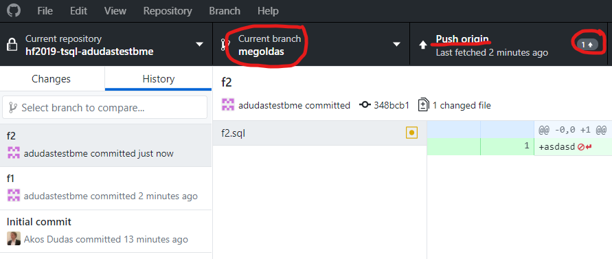
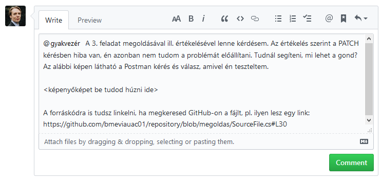

Feladatok beadása (GitHub)¶
A feladatok beadásához a GitHub platformot használjuk. Minden labor beadása egy-egy GitHub repository-ban történik, melyet a feladatleírásban található linken keresztül kapsz meg. A labor feladatainak megoldását ezen repository-ban kell elkészítened, és ide kell feltöltened. A kész megoldás beadása a repository-ba való feltöltés után egy un. pull request formájában történik, amelyet a laborvezetődhöz rendelsz.
FONTOS
Az itt leírt formai előírások betartása elvárás. A nem ilyen formában beadott megoldásokat nem értékeljük.
Rövidített verzió¶
Alább részletesen bemutatjuk a beadás menetét. Itt egy rövid összefoglaló az áttekintéshez, illetve a helyes beadás ellenőrzéséhez.
-
A munkádat Moodle-ben található GitHub Classroom meghívó linken keresztül létrehozott GitHub repository-ban kell elkészítsd.
-
A megoldáshoz készíts egy külön ágat, ne a master-en dolgozz. Erre az ágra akárhány kommitot tehetsz. Mindenképpen pushold a megoldást.
-
A beadást egy pull request jelzi, amely pull request-et a laborvezetődhöz kell rendelned.
-
Ha az eredménnyel vagy értékeléssel kapcsolatban kérdésed van, pull request kommentben kérdezhetsz. A laborvezető értesítéséhez használd a
@névcímzést a komment szövegében.
A munka elkezdése: git checkout¶
-
Regisztrálj egy GitHub accountot, ha még nincs.
-
Moodle-ben a kurzus oldalán keresd meg a laborhoz tartozó meghívó URL-t. Ez minden laborhoz más lesz, ügyelj rá, hogy a megfelelő linket használd.
-
Ha kéri, adj engedélyt a GitHub Classroom alkalmazásnak, hogy használja az account adataidat.

-
Látni fogsz egy oldalt, ahol elfogadhatod a feladatot ("Accept the ... assignment"). Kattints a gombra.

-
Várd meg, amíg elkészül a repository. A repository linkjét itt kapod meg.
Megjegyzés
A repository privát lesz, azaz az senki nem látja, csak te, és az oktatók.

-
Nyisd meg a repository-t a webes felületen a linkre kattintva. Ezt az URL-t írd fel, vagy mentsd el.

-
Klónozd le a repository-t. Ehhez szükséges lesz a repository címére, amit a repository webes felületén a Clone or download alatt találsz.
A git repository kezeléséhez tetszőleges klienst használhatsz. Ha nincs kedvenced még, akkor legegyszerűbb a GitHub Desktop. Ebben az alkalmazásban közvetlenül tudod listázni a repository-kat GitHub-ról, vagy használhatod az URL-t is a klónozáshoz.

Ha konzolt használnál, az alábbi parancs klónozza a repository-t (ha a
gitparancs elérhető):git clone <repository link>Sikertelen klónozás
Amennyiben a bejelentkezés sikertelen felhasználónév/jelszó párossal a "Clone with HTTPS" esetén, (régebb óta használt felhasználónál) érdemes ellenőrizni a git-en található Personal Access token lejárati dátumát.
Jobb felső sarokban a profilkép melletti lefelé mutató nyil > Settings > bal oldalon (legalsó) Developer settings > ugyanitt Personal access tokens.Alternatív módszerként: HTTP klónozás helyett, SSH kulcs használatához, angol nyelvű instrukciók itt találhatóak.
-
Ha sikerült a klónozás, MÉG NE KEZDJ EL DOLGOZNI! A megoldást ne a repository
master/mainágán készítsd el. Hozz létre egy új ágat (branch)megoldasnéven.GitHub Desktop-ban a Branch menüben teheted ezt meg.

Ha konzolt használsz, az új ág elkészíthető ezzel a paranccsal:
git checkout -b megoldas -
Ezen a megoldás ágon dolgozva készítsd el a beadandókat. Akárhányszor kommitolhatsz és pusholhatsz. A megoldás része a forráskód és a feladatokban elvárt képernyőképek. Ha a feladat képernyőképet vár el, akkor azt a repository gyökerébe commitold az elvárt néven.
Egyetemi laborban
Laborgépeken mindig ellenőrízd, hogy a megfelelő névvel és email címmel kommitolsz-e. Ezt a következő command line paranccsal tudod megtenni.
git config user.name git config user.emailHa ez nem megfelelő lenne, akkor add ki az alábbi parancsokat a git repository mappájában. Ezzel az adott repository-ra fogod beállítani a kívánt nevet és email címet. (Érdemes olyan email címet, megadni ami a github useretekhez van rendelve)
git config user.name "John Doe" git config user.email "john@doe.org"Otthon
Otthon a fentieket érdemes lehet a globálisan vizsgálni és felülírni a
--globalkapcsolóval.GitHub Desktop-ban így tudsz kommitolni. Mindig ellenőrizd, hogy jó ágon vagy-e. Első alkalommal a megoldas ág csak helyben létezik, ezért publikálni kell: Publish this branch.

A további kommitoknál is mindig ellenőrizd a megfelelő ágat. Ha egy kommit még nincs felöltve, azt a Push origin gombbal teheted meg. A kis szám a gombon jelzi, hogy hány, még nem pusholt kommit van.

Ha konzolt használsz, akkor az alábbi parancsokat használd (feltéve, hogy a jó ágon vagy):
# Ellenőrizd az ágat, és hogy milyen fájlok módosultak git status # Minden változtatást előkészít kommitolásra git add . # Kommit git commit -m "f1" # Push első alkalommal az új ág publikálásához git push --set-upstream origin megoldas # Push a továbbiakban, amikor az ág már nem új git push
A megoldás beadása¶
-
Ha végeztél a megoldással, ellenőrizd a GitHub webes felületén, hogy mindent feltöltöttél-e. Ehhez a webes felületen váltanod kell az ágak között.

Feltöltés a webes felületen
Azt javasoljuk, hogy ne használd a GitHub fájl feltöltés funkcióját. Ha valami hiányzik, a helyi git repository-ban pótold, és kommitold majd pushold.
-
Ha tényleg kész vagy, akkor nyiss egy pull request-et.
Minek a pull request?
Ez a pull request fogja össze a megoldásodat, és annak "végeredményét" mutatja. Így a laborvezetőnek nem az egyes kommitjaidat vagy fájljaidat kell néznie, hanem csak a releváns, változott részeket látja egyben. A pull request jelenti a feladatod beadását is, így ez a lépés nem hagyható ki.
A pull request nyitásához a GitHub webes felületére kell menj. Itt, ha nem rég pusholtál, a GitHub fel is ajánlja a pull request létrehozását.

A pull request-et a fenti menüben is létrehozhatod. Fontos, hogy a megfelelő brancheket válaszd ki:
master-be megy amegoldaság.
Ha minden rendben sikerült, a menüben fent látod a kis "1" számot a Pull request elem mellett, jelezve, hogy van egy nyitott pull request. DE MÉG NEM VÉGEZTÉL!

-
A pull request hatására le fog futni egy értékelés. Ennek eredményét a pull request alatt kommentben fogod látni.
Ez az értékelés minden labor esetében más lesz. Egyes laboroknál a programodat lefuttatjuk, és előzetes pontszámot is kapsz. Más laboroknál csak "szintaktikai ellenőrzést" végzünk.

Ha a kiértékelés eredményével kapcsolatban több információra van szükséged, mint amit itt látsz, a GitHub Actions webes felülete segítségül szolgálhat. Erről itt találsz egy rövid ismertetőt.
-
Ha nem vagy megelégedve a munkáddal, akkor még javíthatsz rajta. Ehhez kommitolj és pusholj újra. Ha továbbra is a megfelelő ágon dolgozol, akkor a pull request újból le fogja futtatni a kiértékelést. Arra kérünk, hogy MAXIMUM 5 alkalommal futtasd le a kiértékelést!
Megoldás javítása kiértékelés nélkül
Ha úgy látod, hogy a megoldásodat még javítani akarod, és nem szeretnéd, hogy mindig lefusson az értékelés, akkor állítsd át a pull request-et a webes felületen draft állapotra.

Ezzel az állapottal jelzed, hogy még dolgozol. Kommitolj és pusholj. Ilyenkor nem fog futni kiértékelés. Ha végeztél, akkor vissza kell állítanod a pull request-et: menj a PR aljára és kattints a "Ready for review" gombra. Ennek hatására visszaáll a PR és le fog futni az automata értékelés.

Maximum 5
A maximum 5 alkalomba nem számoljuk bele az esetlegesen megszakadt, vagy tranziens hiba miatt sikertelen futtatásokat. Ha viszont figyelmetlenségből, vagy szándékosan túlléped az ötöt, akkor pontlevonással szankcionálunk. Arra kérünk, hogy beadás előtt teszteld a megoldásod, ne a GitHub platformot "dolgoztasd" magad helyett!
-
VÉGEZETÜL, ha kész vagy, a pull request-et rendeld a laborvezetődhöz. Ez a lépés feltétlenül fontos, ez jelzi a beadást.

Pull request nélkül
Ha nincs pull request-ed, vagy nincs a laborvezetőhöz rendelve, akkor úgy tekintjük, hogy még nem vagy készen, és nem adtad be a megoldást.
Végeztél
Miután a laborvezetőhöz rendelted a pull request-et, már ne módosíts semmin. A laborvezető értékelni fogja a munkádat, és a pull request lezárásával kommentben jelzi a végeredményt.
Kapott eredménnyel kapcsolatban kérdés vagy reklamáció¶
Ha a feladatok értékelésével vagy az eredménnyel kapcsolatban kérdést tennél fel, vagy reklamálnál, használd a Pull Request kommentelési lehetőségét erre. Annak érdekében, hogy a laborvezető biztosan értesüljön a kérdésről használd a @név mention funkciót a laborvezetőd megnevezéséhez. Erről automatikusan kapni fog egy email értesítést.

Reklamáció csak indoklással
Ha nem értesz egyet az értékeléssel, a bizonyítás téged terhel, azaz alá kell támasztanod a reklamációd (pl. annak leírásával, hogyan tesztelted a megoldásod, és mi bizonyítja a helyességét).